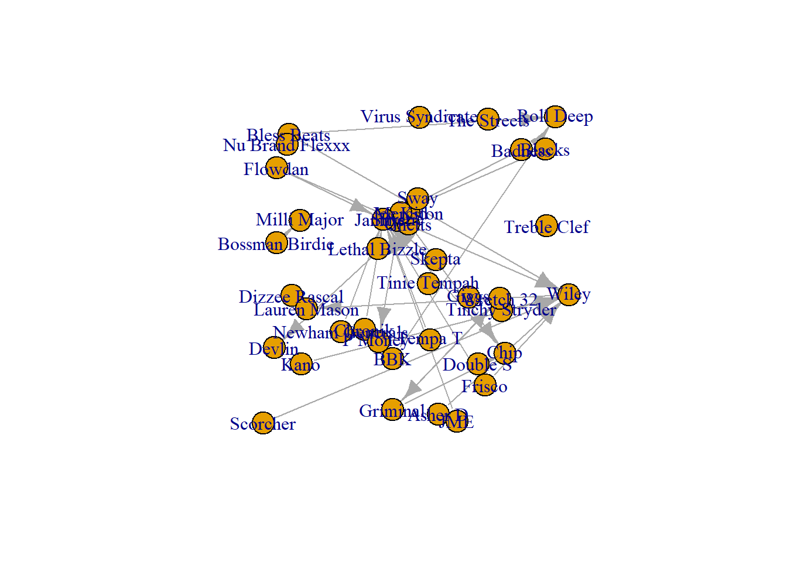
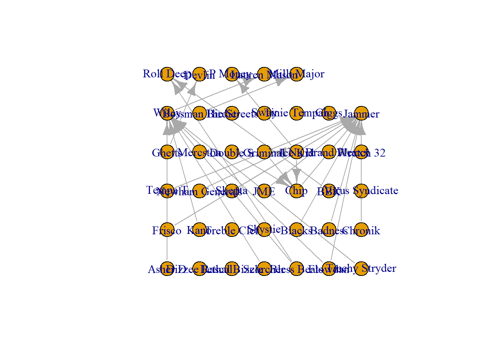
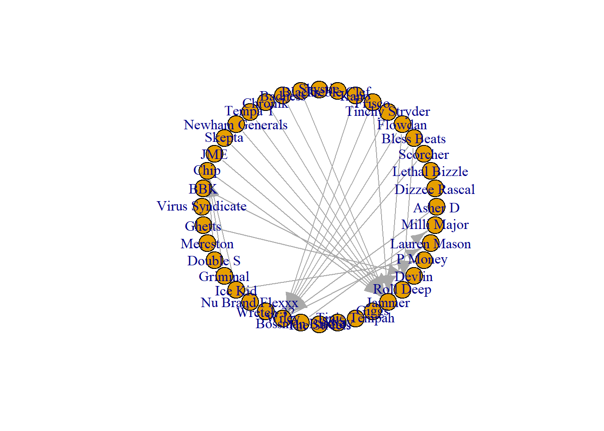
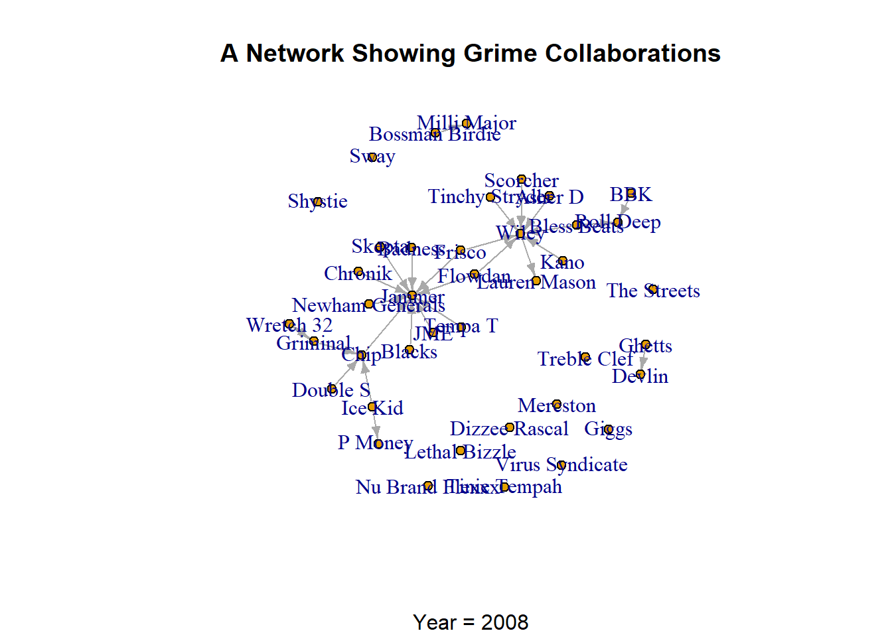
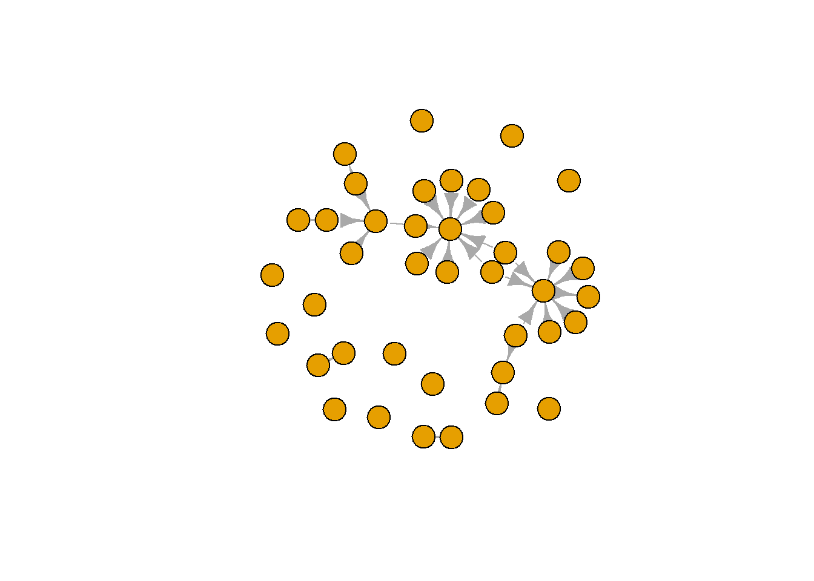

There are several things that you can do to alter the aesthetic of your network visualisation. Creating a ‘clean’ visualisation is a process of toggling back and forth between various options until you generate a visualisation that is free from visual noise and clearly demonstrates the nature of your data. Remember, people don’t usually spend too long looking at a visual. So, whatever you want to portray needs to be captured quickly and easily by a viewer.
This being said, there are aspects of the visualisation that you must remember that can help you generate a basic clear visual. These are the layout, colours, sizes, titles and labels. In this chapter you will cover each individually, but you must remember to combine these techniques generate your visualisation.
LEARNING ELEMENTS - Data Practices
Employing Design Practices. Networks are inherently messier than most other data visualisations. Think about a line graph. There is a lot of empty space in the plot, two axes and a line or two to follow. Networks, however, have a lot going on with the nodes and edges. Here you will learn some best practices to reduce some of the visual ‘noise’ of your network.
Visual accessibikity. One word you must care about: accessibility. If your viewer (stakeholder, boss, students, client etc.) cannot understand your plot, then that is a problem!
Create plots that are easily understood (self-contained) without much need for an explanation and that deploy colour palettes eassily accessible.
There are multiple preset layouts that igraph can deploy. Some layouts emphasise the nodes in your graph (i.e. making them clearer to see) while others emphasise the edges. Take a look through each of these layouts and see the types of stories you could tell about this network with each.
Random
plot(grime_08_clean, layout = layout.random)

Grid
plot(grime_08_clean, layout = layout.grid)

Small world/Circle
plot(grime_08_clean, layout = layout.circle)

Force-directed Layouts
These final layouts, called force-directed, determine the node’s position based on its relationship to others in the network. It attracts a node towards those that they are connected to but ensures they do not overlap. Here, we cover three algorithms, Fruchterman-Reingold, Kamanda-Kawaii, and Davidson-Harl which all perform slightly differently, but achieve the same thing.
Colours are an important aspect of network visualisation since they can be used to distinguish one type of node from another, or they can be used to accent certain nodes. However, remember that not everyone can see colours clearly. Select colours that have a high contrast from one another. In other words, colours that are distinct. Also, avoid colour pairs that, commonly, colour blind people cannot differentiate. For example, many can’t differentiate between red and green. So, it is advisable to avoid that pairing.
We can change the node colours with the verterx.color() option. You can also toggle with the transparency of the colour using the adjustcolor option and changing the colour’s alpha. Adjusting the alpha can also help with hairball visualisations since the transparency can help visualise overlapping nodes.
R recognises many of the common names or hex colours. See R-Charts for more colours.
11.3 Changing the Sizes
You can change the sizes of various aspects of the graph to make it clearer. Keep in mind that bigger does not always mean clearer! If you have a network with a lot of nodes, the chances are that the nodes are overlapping generating what we call a hairball. This is less than ideal because hairballs actually hide any of the interesting structure that exists within the network. Once way to overcome this is to make the edge and vertex size smaller. Note that you may need to try different sizes until you generate a clean visual.
Additionally, you can change the width of yours ties. While previously we changed the size of the arrows themselves, below we change the width of the lines.
Titles are a great way to further clarify your visualisation by making it it easier to understand. Generally, there are two “styles” of titles. The first is a little more academic that explains the visualisation. Something like “A Network Showing the Collaborations of Grime Artists in 2008.” This is very descriptive of that the graph is. The second style is a more demonstrative of what the graph presents. “Grime 2008 Had Two Well-Connected Artists.” Rather than explaining what the visualisation is (i.e. a network) it explains what the graph shows (i.e. the story of the vis.). Be mindful of what audiences you are creating visuals for. Are they interested more in explanation or the story?
In Igraph, you can have a main title. This is usually at the head or top of the network and orients people to your visual (in either style discussed above).
You may also wish to present a subtitle on your graph. Subtitles act as footnotes or further explanations of your network. These titles are usually placed at the foot (bottom) of your visualisation.
plot(grime_08_clean, vertex.size =5, edge.arrow.size =0.5, main ="A Network Showing Grime Collaborations", sub ="Year = 2008")

11.5 Labels
Labeling nodes on your network can be useful so viewers can identify nodes easily. Or, you can use them to draw people’s attention to certain nodes.
First, you may wish to change the size and offset the labels. These are particularly useful if you have many labels that are running into each other since reducing the size and offsetting them slightly can bring the labels away from highly populated areas of the network increasing its readability.
Alternatively, you may wish to remove the labels altogether. This is useful if you have many nodes and the node labels are running into each other regardless of your sizing and offsetting.
plot(grime_08_clean, vertex.label =NA)

Finally, you may wish to present the labels of highly connected individuals in the network. Here, for example, we have a slightly more advanced visualisation to demonstrate the well-connected artists in the network. See if you can follow the logic of the code.
Here, then, we combine multiple visualisation techniques to generate a clean visualisation that emphasises the two most highly connected artists in Grime during 2008, Wiley and Jammer. We have changed the colour of the nodes in the graph to purple if they have more than 4 connections and greenif they have less. Since we are discussing a labels here, pay special attention to the ifelse() statement for the vertex label. We have changed the labels to show only those with more than 4 connections. Due to the node colour being dark, we also set the label colour to white.
11.6 General considerations for visualizations
So, we have talked about changing specific elements of your visualisation to clean it by reducing the visual noise and maximising certain aspects of the graph we care about. However, there are a few other tricks that you can use in R to help producing your visualisations.
The Aspect Ratio
At the moment, the plots we have created look rather “zoomed out.” Almost as though you are looking at it through the wrong end of binoculars. This is because RStudio has margins on their plot windows. What that means is that there is a standard set amount of white space along the margins (sides, top and bottom) of a plot. We can reduce these margins with the par() function and reduce the margins (mar=) to 0. What this effectively does is “zoom in” to the plot by removing the white space. Bare in mind, the mar option starts at the bottom, left, top, then right. So, if you have a mar = c(5,1,1,3) you will have a plot that has five units on the bottom, 1 on the left and top, then 3 on the right. You must run the par() function prior to your plot() for it to take effect. Take a look at the following plots for a demonstration.
We have reduced the margins all down to zero in the second plot. Keep in mind, if you have titles (main or sub) or a key/legend on your plotm you will need to increase the margins accordingly since they are placed into the margins.
Replicating Plots - set.seed()
You might have noticed that each time we plot our grime network, it looks a little different. The nodes and edges are all the same but the position of the visualisation is different each time. This occurs because R begins a plot from a point (think coordinates) in the plot window and selects a different place each time. In order to produce the same plot more than once, you must set the seed which basically means telling R where to start. If it starts in the same place each time, it will produce the same visual. Take a look at the following code.
In the above chunk we have set the parameters (zoomed in) and selected a seed (starting point) of 123. This could be whatever numbers you want. So long as you call on it the same each time you plot that network, it will produce the same visual. See below, for example.
The visualisation is replicated. This is particularly useful when you need to produce the same visual (i.e. for a publication). So, when you care about reproducing the network visual, set the seed!
Multiple Plots
One final trick, you may want to have more than one plot next to each other. This side-by-side approach is often used to compare across visualisations or to present different elements of the network. Again, we use the par() function, but this time we use the mfrow option and then set the number of rows and columns in our plot.
Here we set our plot to have two rows and one column which presents one visual stacked on the other.
Visualisation is a powerful tool to communicate data. However, visualisations can be very messy and the mess may confuse rather than clarify. In this section, we have covered:
Methods for reducing visual noise in a network through changing the layout, sizes, and colours
Effective titling methods
Ways to make certain aspects of the network more prominent
Effective and accessible collouring of network visualisations
General tricks for creating network visuals in RStudio.